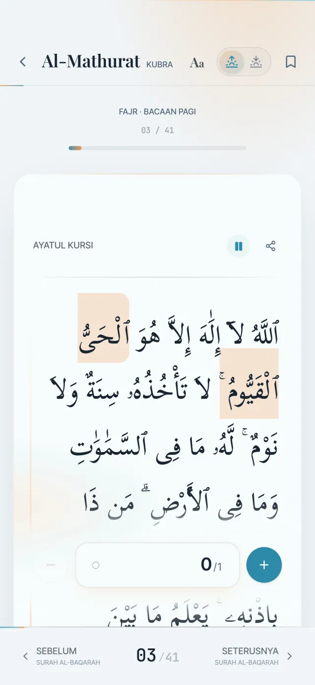
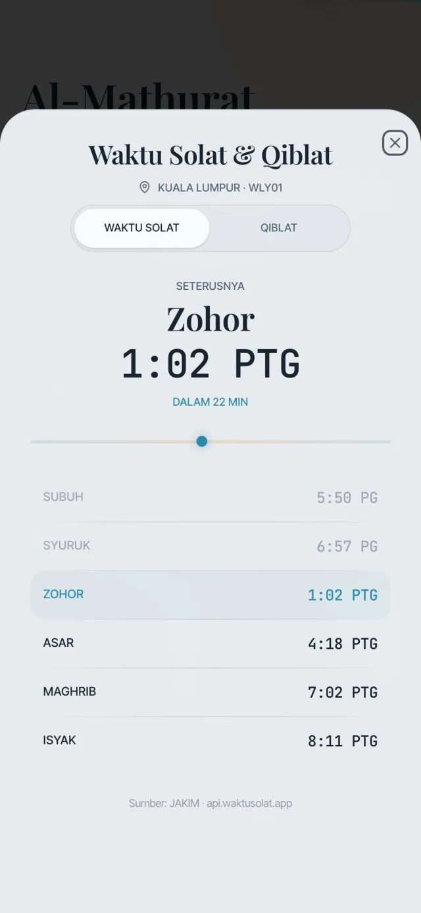
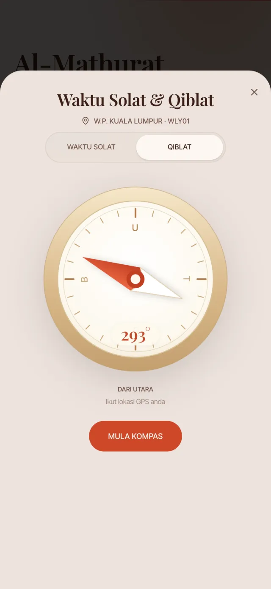
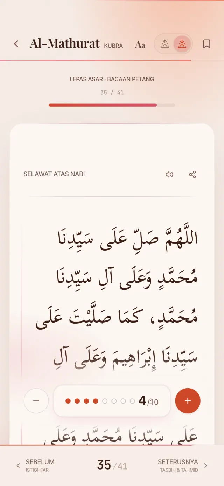
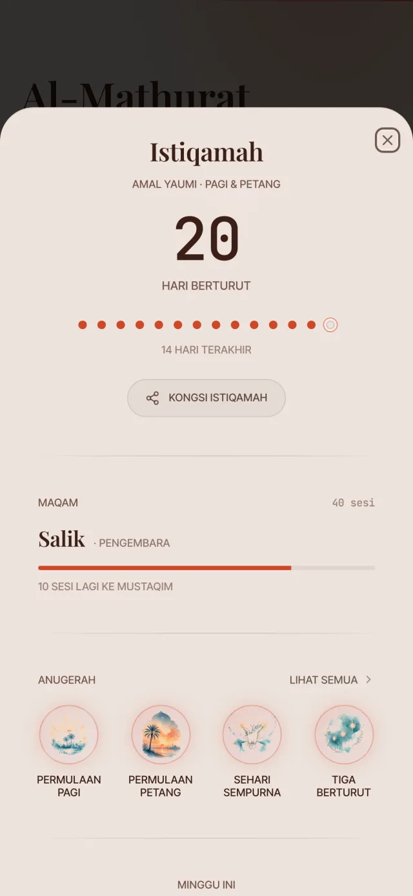

Doa Pujian Kepada Allah
__STEP__ / 41
__AR_PAGI__
__AR_PETANG__
__TR_PAGI__
__TR_PETANG__
0/3
Zikir pagi & petang Wazifah Kubra & Sughra
Wirid harian susunan Imam Hasan al-Banna, dengan teks Arab dan terjemahan Bahasa Melayu. Dengar bacaan penuh, kira zikir dengan manik tasbih, dan dapatkan waktu solat untuk zon anda.
Atau guna terus dalam pelayar web__AR_PAGI__
__AR_PETANG__
__TR_PAGI__
__TR_PETANG__
Bacaan ini diulang 3 kali. Tekan + untuk mengira, sama seperti dalam app.
Al-Mathurat menemani amalan anda sepanjang hari, bukan sekadar teks untuk dibaca.
Dengar bacaan penuh oleh Ustadz Nandar S. Ayat yang sedang dibaca akan disorot, dan skrin bergerak mengikut bacaan.
Pilih kelajuan bacaan, dan terus dengar walaupun skrin dikunci.

Waktu solat JAKIM untuk 60 zon di seluruh Malaysia, dikesan dari lokasi anda. Azan penuh berkumandang bila masuk waktu. Anda boleh pilih waktu mana yang berazan dan rakaman azan yang anda suka.
Di mana pun anda berada, kompas kiblat berputar mengikut telefon dan bergetar perlahan bila anda tepat menghadap kiblat.


Bila petang tiba, app bertukar ke warna senja dan memaparkan teks bacaan petang dengan sendirinya.
Zikir yang diulang 3, 7 atau 10 kali dikira dengan manik tasbih. Tekan sahaja, dan app ingat kedudukan anda.

Setiap bacaan yang selesai menyambung rentetan hari anda. Naik maqam, dan buka 19 anugerah cat air yang boleh dikongsi sebagai kad.
Semua rekod ini disimpan dalam telefon anda sahaja.

Kedua-duanya mengikut susunan asal risalah Al-Ma'thurat. Tukar antara keduanya dengan sekali tekan.
Untuk iPhone dan Apple Watch, telefon Android, atau terus dalam pelayar web.
Buka versi web